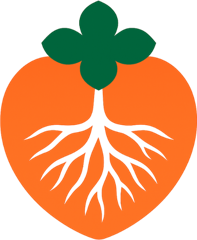
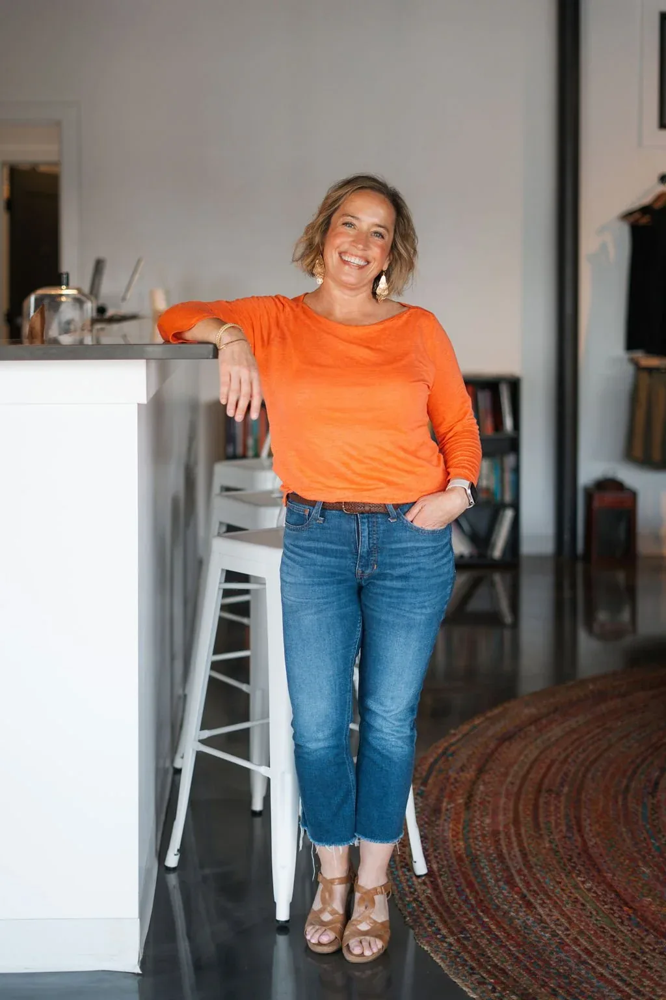

Step 01Free · 30 minutes
The First Step call
An honest conversation to see if we’re a good fit. No pressure, no commitment — just space to say out loud what’s been on your mind.
FreeOn videoNo pressure

take rootLife CoachingChoose your path.One-on-one coaching for the whole you — helping you get clear, find your footing, and build a life that feels fulfilling, not just manageable.
I’m Adrienne, a whole-person life coach for people who look fine on paper but feel quietly unfulfilled — helping you slow down, get clear, and build a life that feels like yours again.
Maybe life looks fine from the outside. But inside feels restless, disconnected, or quietly unfulfilled. If a few of these ring true, you’re in the right place.

You just haven’t had the space to figure out what’s missing. Coaching gives you that space.
You’ve checked every box — and still catch yourself asking, “is this it?”
Your days run on autopilot: busy, capable, and quietly disconnected.
Something needs to shift, but you can’t quite name what it is yet.
Your career, your health and your daily life feel out of sync.
You’ve tried therapy and still feel like something is missing.
How you feel about your career, your health and your daily life aren’t separate problems — they share the same roots. So we look at the whole you, not just the problem.
Competing thoughts, options and obligations get loud. We slow everything down so you can finally hear yourself think.
Get clear on who you are, what you truly want, and what’s been standing in your way — across your career, health and daily life.
Leave every session with a next step, and build the self-trust to keep moving toward the most fulfilled version of yourself.
Strong roots · steady growth
Whether you’re just curious or ready to dive in, there’s a clear, simple way to get started. Every session is held virtually, at a time that works for you.
An honest conversation to see if we’re a good fit. No pressure, no commitment.
Space and continuity to go deeper — discovering patterns, building clarity, and taking meaningful steps forward. Just $130 per session.
A focused 50-minute session to work through what’s on your mind. Perfect if you want to explore coaching first.
Sessions fit into your life — at home, at work, or on the road. Just bring yourself.
Recurring Client sessions are a check-in when you need a tune-up. Book your next session in a few taps.
Coaching isn’t about being told what to do. It’s about finally having the space to figure out what you actually want — one conversation at a time.
An honest conversation to see if we’re a good fit. No pressure, no commitment — just space to say out loud what’s been on your mind.
We look at the whole you — not just the problem. Untangle the noise, notice the patterns, and name what’s really been missing.
Clarity around who you are and what you truly want turns into a direction you actually believe in — at a pace that feels right for you.

Meaningful steps, momentum between sessions, and the confidence to keep going on your own. A life that feels fulfilling — not just manageable.
For a long time, I was someone who had it mostly together — doing all the right things, checking the boxes — and still felt like something was missing.
I work with people who sense that something needs to shift but can’t quite name what it is yet. As an empath at heart, I meet you exactly where you are — with honesty, warmth, and zero judgment — and we figure it out together.
“You don’t need all the answers right now. You just need someone in your corner who truly gets it.”
Adrienne came into my life when I didn’t know I needed her most. Her advice and support has guided me through many challenges in my life. Adrienne’s empathetic and realistic perspective has helped me look at life in a different way that I could have never adopted on my own. I have achieved new goals, altered my way of thinking and opened my world to more possibilities. I highly recommend Adrienne’s life coaching to anyone looking to improve their lifestyle whether it be personal or professional.
From the day I met Adrienne, I found it very easy to speak with her about any concerns or troubles I was having. I had a major life and career shift over the span of a few months (including moving across the country) and Adrienne was more than helpful at pointing me in the right direction. She gave me confidence to try new things and go outside my comfort zone. I have reached a point in my life and career where I am feeling happy and successful, thanks to her help. I would utilize her life coaching skills again, no questions asked!
Talking to Adrienne helped me feel like it was possible to do things beyond what I thought I could do and helped me become a better me. I am so grateful to talk to someone so personal and understanding as well as having full confidence in me. Thank you so much Adrienne!
We are all on a different journey influenced by our personal perspective. Having Adrienne as a confidant is helpful in navigating the paths and obstacles I encounter. I feel seen and validated whether I need advice or a listening ear. If you need another being in your corner… Adrienne is here!
It starts with a free 30-minute conversation. No pressure — just an honest talk about what you want.
The Footing Check is a quick, private reflection across six areas of your life. You’ll get a visual snapshot and a suggested next step — and you can bring it to your first call.
Before the days of modern medicine, a serious injury often left doctors with only one choice: amputate the limb to save the person’s life. It sounds extreme, even cruel. But sometimes,…
Do you have a hard time asking for help? Do you find unfinished projects scattered through your life?
Last week, I picked up the book “Chatter” by Ethan Kross after a particular stressful few days of dealing with life’s speed bumps. That nagging, negative voice in my head was uncontrollable…